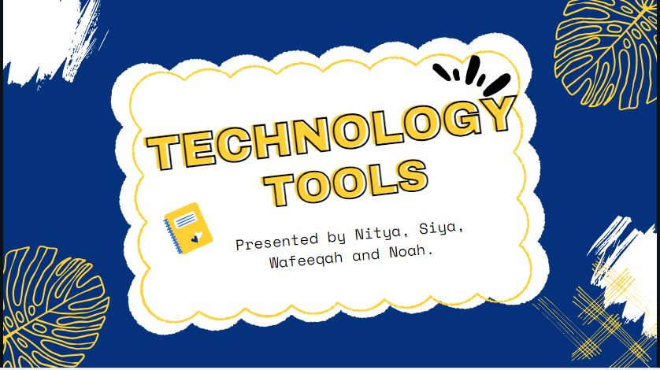

The letter written by me is a good showcase of my skills as it demonstrates good communication skills through an organized,
structured and polite format. These skills will be to my benefit in the future.
Being able to write a structured letter to be able to communicate is important for academic and professional success.
The Catholic graduate is expected to communicate clearly and effectively.
The letter’s well-organized and clear format ensures that the message is communicated effectively and respectfully,
meeting the standard of clear and effective communication.
Additionally, It is required of the Catholic Graduate to think critically and thoughtfully.
The letter's thorough layout shows critical thinking and a thoughtful approach to information presentation in a professional setting.
The picnic assignment shows the skills and traits necessary for efficient planning of events and communication.
They show responsibility, creativity, professionalism, open communication, teamwork, and regard for others.
These skills will be to my benefit in the future. Being able to write a structured letter to be able to communicate and channel
my creativity whilst working with others is important for academic and professional success.
These attributes support the common good and build a feeling of community
in line with Social Teaching principles and Catholic Graduate Expectations.

My plagiarism presentation showcases my ability to conduct research, create appealing slides, communicate effectively, and think critically.
. This will help me in the future because, by raising awareness of plagiarism, I may help companies develop a culture of honesty,
which improves employee morale and establishes my reputation as a potential business leader.
It aligns with Catholic Graduate Expectations because it promotes
responsibility, collaboration, and a culture of honesty within the academic and professional community.

My online website “She Shells”, showcases innovation in digital marketing. Designing layouts
and making a functional website showcases a high understanding in web development. This business
task showcases smart marketing strategies and good understanding in web development. These
skills will be useful in my future business career. This shows connection to the
Catholic social teachings, specifically, serving the common good since I
planned to donate a portion of my earnings to charity.

My presentation on Fluix showcases critical thinking, effective communication and collaboration.
By identifying the pros and cons I demonstrated an understanding of its impact on many industries.
This will be helpful for my future career because it prepares me for the digital world where one must be able to
understand the use of technology and make educated decisions. This aligns with Catholic
Graduate Expectations and social teaching because it demonstrates critical thinking,
effective communication and online awareness. These values are important for preparing graduates
to contribute positively to society.
My presentation about Wikipedia demonstrates critical thinking and effective communication skills. I demonstrate a good understanding
of digital resources and their consequences for sharing information and research through analyzing Wikipedia's advantages
and disadvantages. With the help of this artifact, I will be ready to lead ethically in a world that is becoming more and more digital,
where being able to navigate the complex world of digital data is important to making wise decisions.
This corresponds to the truth-seeking and integrity ideals of the Catholic faith in both academic and professional activities.
My written analysis of electric cars showcases critical thinking and effective communication skills. Furthermore,my thoughts
create a basis for future policy and representation on issues by increasing public knowledge and promoting educated
decision-making in the automobile industry.By highlighting the benefits to the environment, such as lower emissions
and increased energy efficiency, I demonstrate my dedication to stewardship and ethical awareness.
This research supports sustainable mobility options for the common good, which is consistent with Catholic teachings
of responsible citizenship and shared humanity.